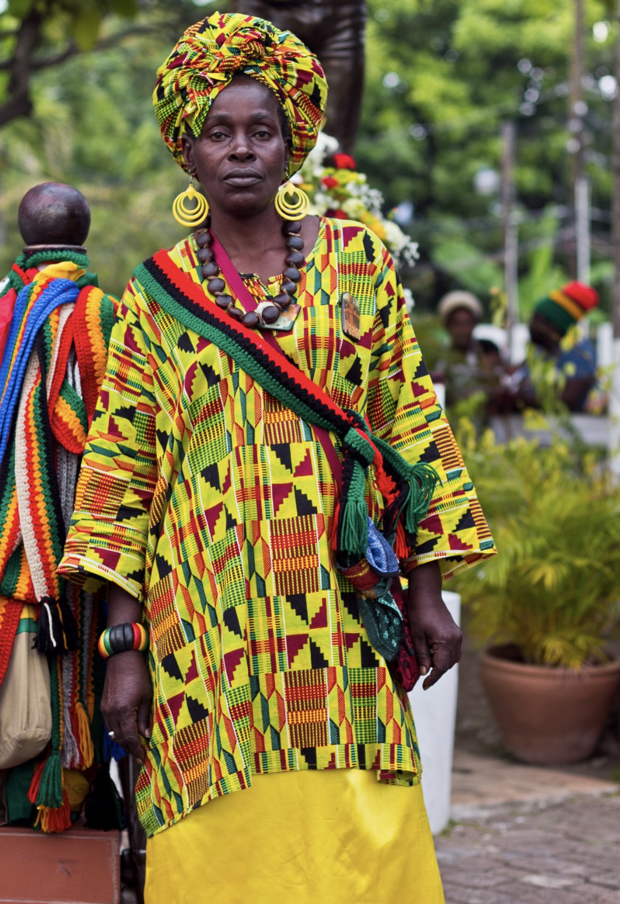
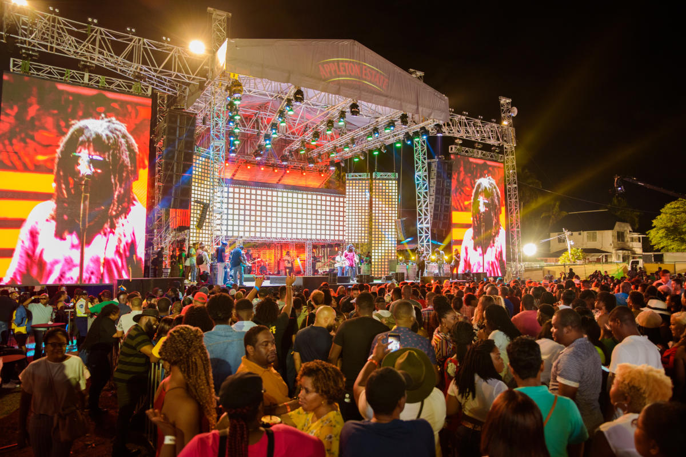
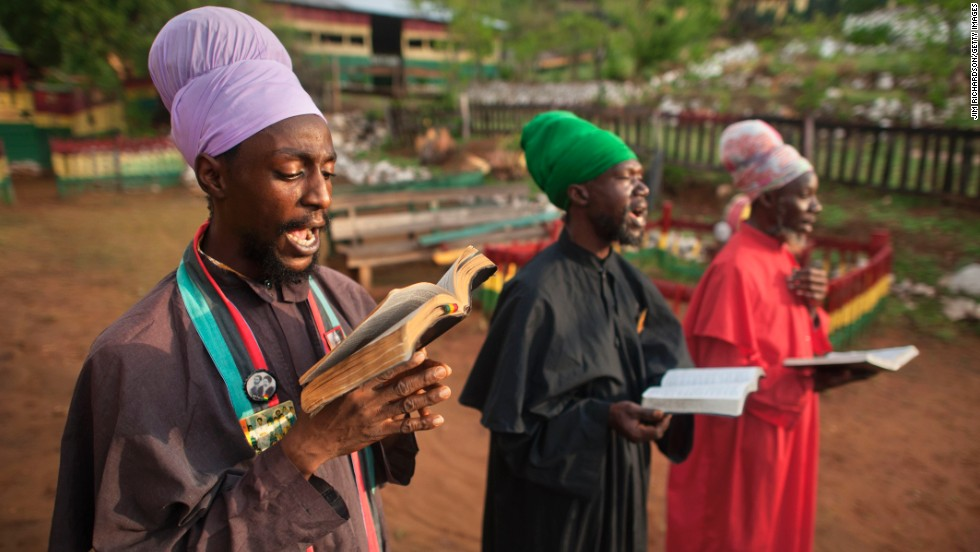
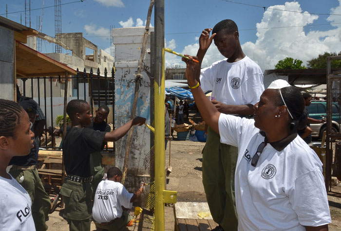

Jamaica: Culture & Traditions
Clothing
Jamaican clothing blends traditional styles with modern fashion. Historically, it was influenced by African heritage and colonial rule, with iconic bright, patterned clothing. Today, Jamaican fashion reflects a mix of comfort and cultural expression, with Rastafarian-inspired colors (red, gold, and green) and streetwear trends. Clothing often celebrates warmth, vibrancy, and creativity, from festivals to everyday wear, embodying the island's colorful spirit.
Music
Jamaican music is very influential, with Reggae being the most iconic genre, popularized by legends like Bob Marley. The island is also the birthplace of Dancehall, Ska, and Dub, which have shaped global music trends. Jamaican music reflects themes of unity and freedon, and continues to influence modern artists worldwide. With its rhythmic beats and cultural roots, Jamaican music is a vibrant expression of the island’s identity and spirit.
Religion
The most popular religion in Jamaica is Christianity. The largest denominations are Protestant, including Baptist, Anglican, and Pentecostal, as well as Roman Catholicism. In addition to Christianity, Rastafarianism holds significant cultural influence, particularly through music and social movements, even though its followers make up a smaller portion of the population. The island also has smaller communities practicing Islam, Hinduism, and Buddhism, reflecting its diverse religious community.
Art

Art in Jamaica is a vibrant part of the island’s culture, reflecting its history, social issues, and natural beauty. Jamaican art is known for its bold colors, dynamic forms, and the blending of African, Caribbean, and European influences. Traditional art forms include crafts like basket weaving, wood carving, and pottery, which are often created using natural materials. These crafts are typically seen in rural areas, showcasing the island's deep-rooted connection to nature and its African heritage.
Holiday
Labor Day in Jamaica, observed on May 23rd, honors the contributions of workers and commemorates the 1938 labor rebellion that led to significant labor reforms. The day is marked by community service projects, where Jamaicans come together to improve public spaces, such as cleaning, painting, and tree planting. It’s a celebration of the nation’s progress in workers' rights and a reminder of the value of hard work and community solidarity.
Language

The official language of Jamaica is English, but the most widely spoken language is Jamaican Patois (Creole). Jamaican Patois is an English-based Creole with influences from African languages, as well as Spanish, Portuguese, and indigenous Jamaican terms. While English is used in formal settings like government, education, and media, Patois is the language of everyday conversation and reflects the island's cultural identity. The use of Patois in music, particularly in Reggae and Dancehall, has also contributed to its global recognition.